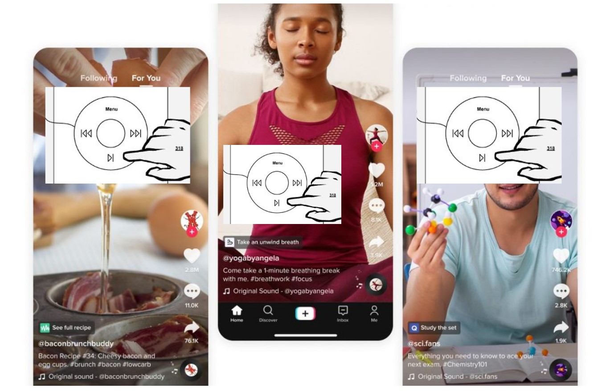

Friction
Smartphones are powerful. They can hold a multitude of applications that aid us in everyday life. We can listen to music on demand, watch videos and movies on demand, order anything we want on demand. However, what happens when the add friction, when we make these apps, which are specifically designed to be easy to use, more frustrating? Well, take TikTok as an example; it's easy to use, just scroll through the endless amounts of short videos to watch. By adding friction, such as a manual scroll wheel (that controls playback), it makes it a lot more frustrating. My report highlights a little more about the features of this new app.
